国・地域の見分け方
- ドメインは.my
- 公用語はマレー語や英語など
- 車は左側通行
- 黄色の6角形の道路番号
- とまれの標識がberhenti
- ナンバープレートが黒地に白文字
- 電柱に黒いラベルが付いているならば本土側になる(from 『【GeoGuessr】公認プレイヤーによる国当て完全解説！ - Daig_O』)
- SDN BHD・BHDはマレーシアでは～会社・～公開会社の意味
- 標識や看板は白黒のストライプのポールが使われている
- 道路がアスファルトでできていてコンクリート製ではない
見つかる標識
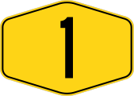
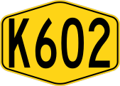
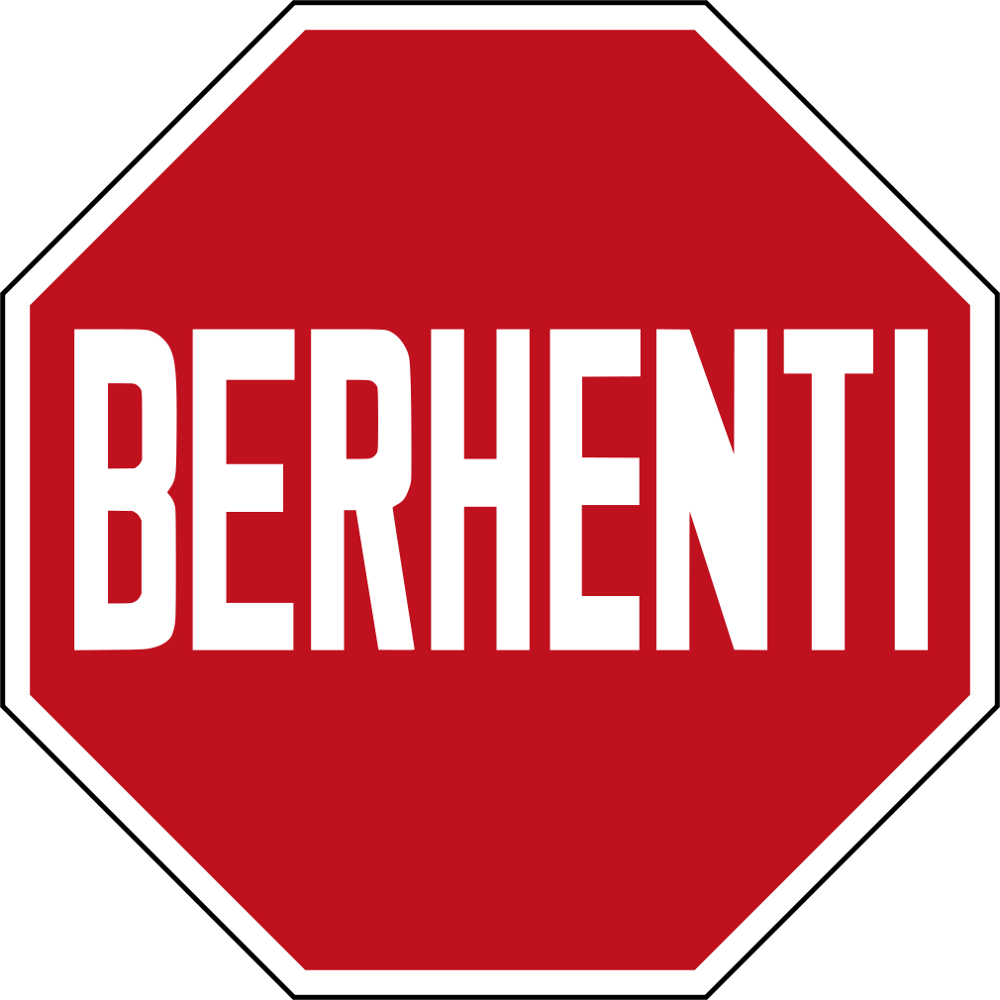
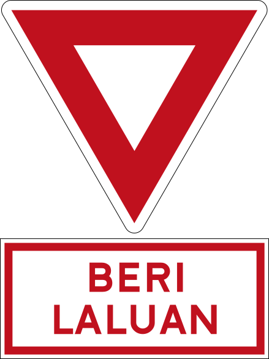
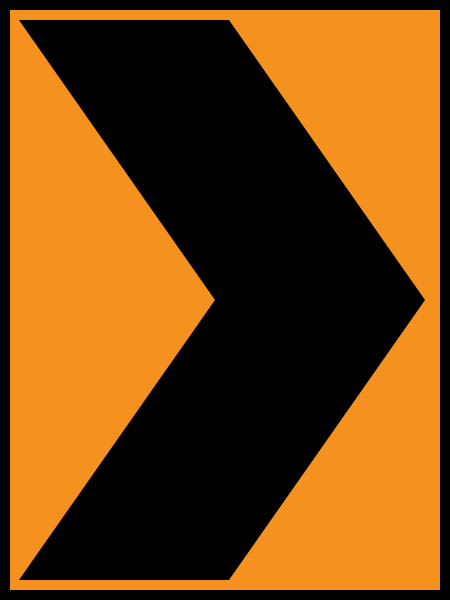
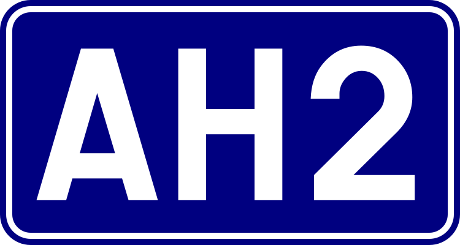
黄色い6角形の道路番号。マレーシア公共事業局のロゴも同じ黄色の６角形で看板に描かれていることが多い(参考文献 Jabatan Kerja Raya Malaysia)。標識や看板は白黒のストライプのポールが使われていて、道路のセンターラインはほとんどが白色で、画像のように中央に２本の白線がある道はマレーシア以外あまり見かけない。
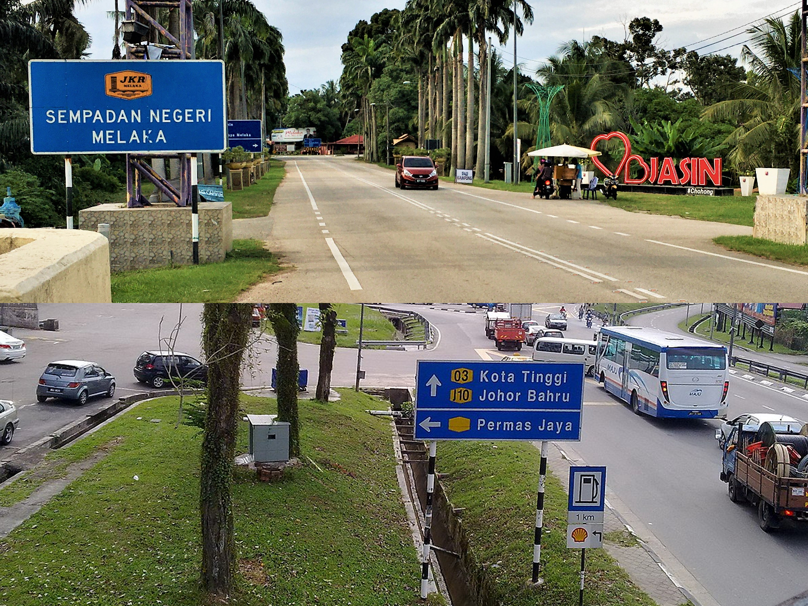
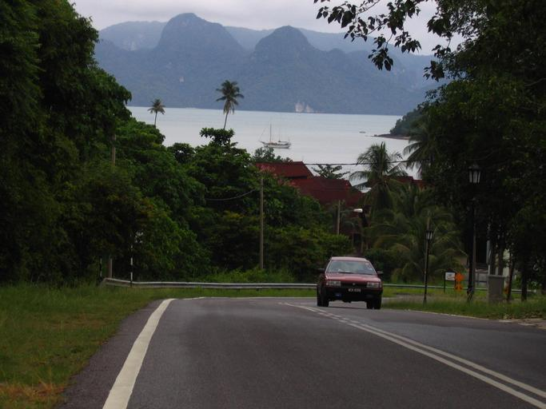

電柱に黒いラベルがあるならばボルネオ側ではなく本土側(from 『【GeoGuessr】公認プレイヤーによる国当て完全解説！ - Daig_O』)。ただしインドネシアのリアウ諸島にある黒いラベルっぽいもので国を外したことがあるので周りもちゃんと見る。
.jpg#/media/File:Peserai,_83000,_Johor,_Malaysia_-_panoramio_(1).jpg)
By Ardeka Balian Aga Fo…, CC BY-SA 3.0, Link
モザイクのかかり方によってはナンバープレートが２つに分かれて見える。３つに分かれているならインドネシアかも。
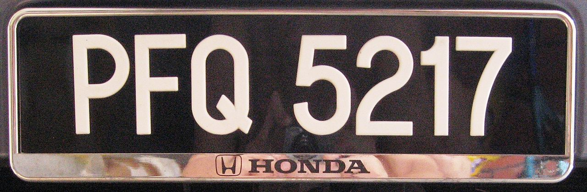
By Slleong - Own work, CC BY-SA 3.0, Wikimedia Commons(Link)

マレーシアの石油及びガスの供給を行う大手国営企業ペトロナスが運営するペトロナス・ガス（Petronas Gas Bhd）があり看板に場所が書いてある(参考文献 PETRONAS Gas Berhad (PGB))。以下の例はLunduのガソリンスタンド。ペトロ🍆。

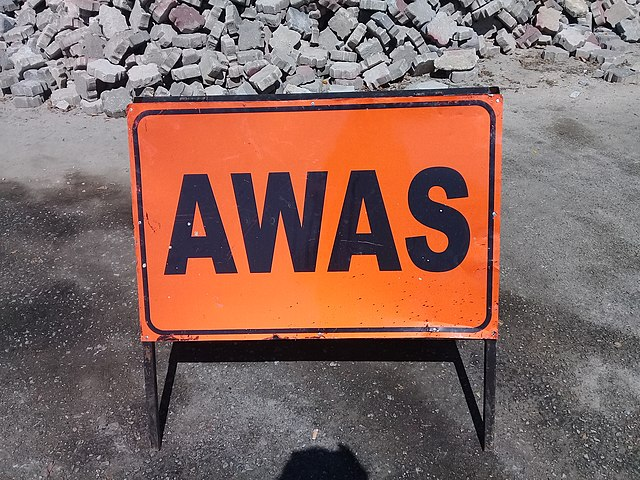
SDN BHD、BHDはマレーシアでは～会社、～公開会社の意味
{{< amazoncard url=“https://amzn.to/3KDtDaD” title=“マレーシアを知るための58章 (エリア・スタディーズ)” price=“¥2,200” tagline=“マレーシアは、インドシナ半島南部に位置するマレー半島部と南シナ海をはさむボルネオ島の、民族構成や社会構造など異なった2つの地域を主たる領土としている。本書では異なる要素を内包しつつそれを結び付けて成り立っている魅力に溢れるこの国を紹介する。”
}}
州・地域の絞り込み
- ジャウィ文字の表記が通り名やスーパーの看板にあるときは半島側の北部か南部の可能性がある(参考文献 Jawi script)。
- 農業分布に偏りがある
- アブラヤシのプランテーションは本土東側とSabah周辺に多い
- 田んぼがある場合は本土の北部側のケースが多い
- データ提供元：U.S. Philippines Production Country Summary(U.S. Department of Agriculture)
- 『The Malaysia Doc by zi8gzag』が詳しいのでこれを参照する
半島北部（トレンガヌ州・クランタン州・ケダ州・プルリス州）と半島南部（ジョホール州、シンガポールに一番近い州）でよく使用される。ただしこの看板が黄色ならばジョホール州である可能性が高い(参考文献 The Malaysia Doc by zi8gzag)。インドネシアのリアウ州やリアウ諸島でもこの文字がある。
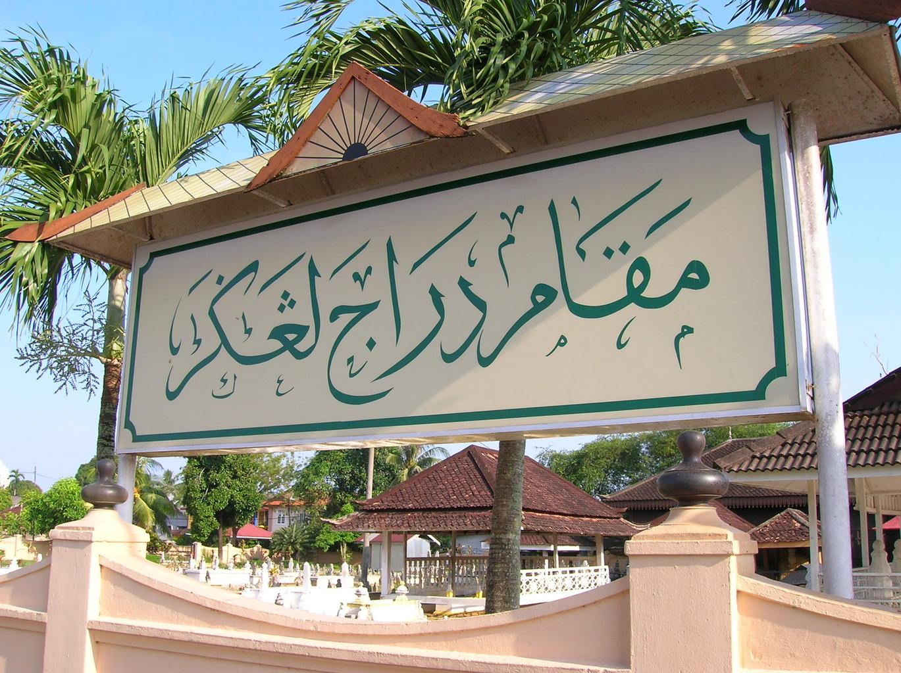
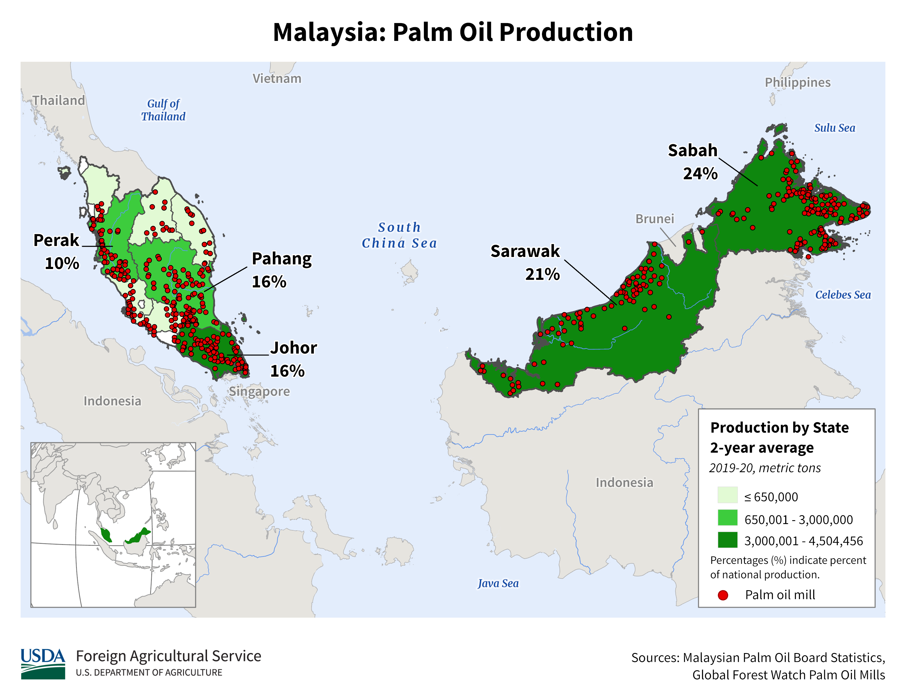
赤●のPalm Oil Mill周辺には大規模なパームのプランテーションが広がっていることが多い。Sarawakの中部は道路があまりないので、大規模なプランテーションがある場合はSabahの東側に寄せてみる？
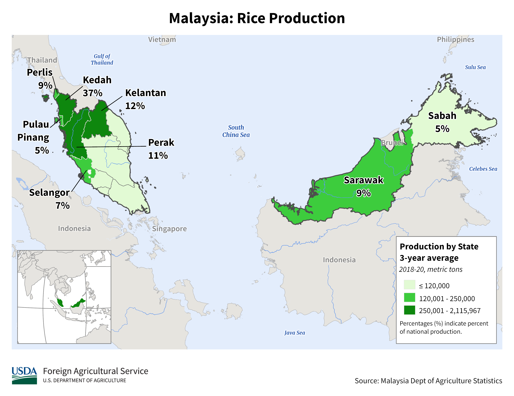
田んぼは一番北の地域に多い